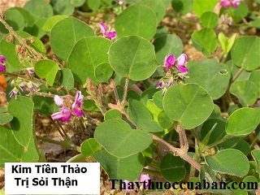

Tên Khác:
Tên dân gian: Kim tiền thảo còn gọi Bạch Nhĩ Thảo, Bản Trì Liên, Biến Địa Hương, Biến Địa Kim Tiền, Cửu Lý Hương, Nhũ Hương Đằng, Phật Nhĩ Thảo, Thiên Niên Lãnh (Trung Quốc Dược Học Đại Từ Điển), Đại Kim Tiền Thảo, Giang Tô Kim Tiền Thảo, Quá Lộ Hoàng, Quảng Kim Tiền Thảo, Tứ Xuyên Đại Kim Tiền Thảo (Trung Dược Học), Đồng Tiền Lông, Mắt Rồng, Mắt Trâu, Vảy Rồng ( Việt Nam).
Tên Khoa Học: Herba Jinqiancao, Desmodium styracifolium (Osbeck) Merr.
Họ khoa học: Họ Cánh Bướm (Fabaceae).
Cây kim tiền thảo
(Mô tả, hình ảnh cây kim tiền thảo, phân bố, thu hái, chế biến, thành phần hóa học, tác dụng dược lý...)

Mô Tả:
Cây kim tiền thảo là một cây thuốc nam quý. Dạng cây thảo, sống lâu năm, bò sát đất, dài khoảng 1m. Lá mọc so le, gồm 3 lá chét hình tròn, có lông &1 vàng. Hoa tự hình chùm. Tràng hoa hình bướm, màu tía. Quả loại đậu, dài 14-16mmm, chứa 4-5 hạt.
Phân bố:

Cây mọc hoang khắp càng vùng đồi núi nước ta, hiện nay có nhiều nơi đã tiến hành trồng đại trà cây thuốc này. Ví dụ: Hà Nội, Lào Cai, Yên Bái….
Thu Hái, Sơ Chế:
Thu hái vào mùa hè,lúc cay có nhiều lá và hoa. Phơi khô.
Bộ Phận Dùng: Toàn cây.
Bào Chế:
Rửa sạch phơi khô, để dùng.
Bảo Quản:
Để chỗ kín, tránh ẩm mốc.
Thành Phần Hóa Học:
Trong Kim tiền thảo có:
·Loại Herba Glechomae Longitubae: L-Pinocamphone, L-Menthone, L-Pulegone, a-Pinene, Limonene, p-Cymene, Isopinocamphone, Isomenthone, Linalôl, Menthol, a-Terpinol, Ursolic acid, b- Sitosterol, Palmitic, acid, Amino acid, Tannins, Choline, Succinic acid, Potassium nitrate.
·Loại Herba Desmodii Styracifolii: Ancloid, Tannin, Flavones, Phenols.
·Loại Lysimachiae Christinae: Phenols, Sterols, Flavones, Tannín, Essential oils (Trung Dược Học).
Tác Dụng Dược Lý:

+Tác Dụng Lên Tim Mạch: nước sắc Kim tiền thảo của Quảng Đông, chích vào chó bị gây mê thấy tuần hoàn mạch vành tăng, hạ áp lực động mạch, làm chậm nhịp tim, giảm lượng oxy ở tim. Tuần hoàn của Thận và não cũng tăng. Thí nghiệm trên heo, thấy cơ tim co lại.
+Tác Dụng Trên Mật: Thí nghiệm trên chó bị gây mê thấy thuốc có tác dụng tăng nhanh bài tiết mật nhờ vậy có tác dụng tống sạn mật, làm giảm đau ở ống mật, hết vàngda.
+Tác Dụng Đối Với Hệ Bài Tiết: nước sắc Kim tiền thảo có tác dụng lợi tiểu đối với chuột và thỏ, có thể do chất Potasium chứa trong thuốc.
+Tác Dụng Đối Với Sỏi, Sạn: nước sắc Kim tiền thảo liều cao ( trên 80g), thường được dùng trị sạn ở mật hoặc đường tiểu.
+Đối Với Bệnh Nhiễm Khuẩn: nước sắc Kim tiền thảo trị 10 cas ho gà, có 7 cas khỏi, 2 cas có tiến triển. Loại Lysimachia (Quá Lộ Hoàng) đối với tụ cầu vàng, loại Glechoma ( HoạtHuyết Đơn) đối với tụ cầu vàng, trực khuẩn thương hàn, lỵ, trực khuẩn mủ xanh đều có tác dụng ức chế.
+Điều trị bệnh ở ngực: Dùng nướccốt Kim tiền thảo tươi trị 13 cas tuyến vú viêm, có kết quả rất tốt. Tất cả khỏi trong vòng 6 ngày. Có 8 cas khỏi trong 3 ngày hoặc ngắn hơn. 2 trong số những cas này không thích ứng với trụ sinh.
Vị thuốc kim tiền thảo
(Công dụng, liều dùng, quy kinh, tính vị...)
Tính vị, quy kinh

Vị ngọt mặn tính hơi hàn, qui kinh Can đởm thận bàng quang (theo sách Dược điển nước Cộng hòa nhân dân Trung hoa xuất bản năm 1985).
Tác Dụng:

+Thanh nhiệt, lợi thủy, tiêu sạn, giải độc, tiêu viêm (Trung Dược Học).
+Lợi thủy, thông lâm, tiêu tích tụ (Đông Dược Học Thiết Yếu).
“Trị chứng nga chưởng phong dùng Kim tiền thảo xát vào là khỏi. Dùng nước cốt Kim tiền thảo ngậm, súc miệng rồi nhổ đi trị răng đau rất hay. Vì Kim tiền thảo khứ phong, tán độc do đó, nấu nước Kim tiền thảo mà tắm rửa trị ghẻ lở rấùt thần hiệu...” (Trung Quốc Dược Học Đại Từ Điển).
. “Có thể dùng độc vị Kim tiền thảo sắc uống thay nước trà để tống sỏi ra” (Trung Dược Học).
. “Kim tiền thảo có nhiều chủng loại, chia làm 5 loại họ thực vật khác nhau:
1)Đại Kim tiền thảo Tứ Xuyên , thuộc họ Anh thảo, trị bệnh sỏi ở gan mật đạt hiệu quả tốt.
2)Tiểu Kim tiền thảo Tứ Xuyên, thuộc họ Toàn hoa, có thể dùng trị lỵ, bệnh mắt, ghẻ lở.
3)Kim tiền thảo Quảng Đông, thuộc họ Đậu, thường dùng trị bệnh sỏi ở gan mật và Thận.
4)Kim tiền thảo Giang Tây, thuộc họ Hoa tán, thường dùng trị bệnh Thận viêm, sỏi Thận.
5)Kim tiền thảo Giang Tô, thuộc họ Hoa Môi, những năm gần đây phát hiện thấy có thể trị sỏi bàng quang” (Đông Dược Học Thiết Yếu).
Chủ Trị:
+ Trị các chứng nhiệt lâm, thạch lâm, sỏi mật, hoàng đản, ung nhọt do nhiệt độc (Trung Dược Học).
+Trị gan mật kết sỏi, sỏi Thận, tiểu buốt, hoàng đản (Đông Dược Học Thiết Yếu).
Liều Dùng: 20-40g.
Ứng dụng lâm sàng của vị thuốc kim tiền thảo
Trị sỏi thận, sỏi tiết niệu, sỏi bàng quang: Đau bụng dưới, đau lan ra phía sau, có những cơn đau quặn kéo dài, đau kéo dái hàng tháng lúc tăng lúc giảm. Đi tiểu buốt, lúc thông lúc bí, thường phải đi nhiều lần, lượng nước tiểu ít, nước tiểu đỏ.
Bài thuốc: kim tiền thảo 16g, ké đầu ngựa 16g, cối xay 16g, rễ cỏ xước 16g, Đinh lăng (rễ) 16g, cỏ tranh rễ 16g, mã đề 16g, thổ phục linh 16g, vỏ bi ngò 16g, mộc thông 10g. Sắc ngày 1 thang.
Trị mụn nhọt, ghẻ lở:
Kim tiền thảo Xa tiền thảo tươi, giã nát, cho rượu vào, vắt lấy nước cốt, lấy lông ngỗng chấm thuốc bôi vào vết thương (Bạch Hổ Đơn - Chúc Thị Hiệu Phương).
Trị sạn mật:
Bài 1: Chỉ xác (sao) 10-15g, Xuyên luyện tử 10g, Hoàng tinh 10g, Kim tiền thảo 30g, Sinh địa 6-10g (cho vào sau). Sắc uống (Trung Dược Học).
Bài 2: Kim tiền thảo 30g, Xuyên phá thạch 15g, Trần bì 30g, Uất kim 12g,
Xuyên quân (cho vào sau) 10g. Sắc uống (Trung Dược Học).
Trị sạn mật:
Bệnh viện ngoại khoa thuộc Viện nghiên cứu Trung Y Trung Quốc báo cáo 4 cas sạn mật được trị bằng Kim tiền thảo có kết quả tốt (Trung Y Tạp Chí 1958, 11:749).
Trị sạn đường tiểu:
Kim tiền thảo 30-60g, Hải kim sa (gói vào túi vải) 15g, Đông quỳ tử 15g, Xuyên phá thạch 15g, Hoài ngưu tất 12g, Hoạt thạch 15g, sắc uống (Trung Dược Học).
Trị sỏi đường tiểu:
Kim tiền thảo 30g, Xa tiền tử (bọc vào túi vải) 15g, Xuyên sơn giáp (chích) 10g, Thanh bì 10g, Đào nhân 10g, Ô dược 19g, Xuyên ngưu tất 12g. Sắc uống (Trung Dược Học).
Trị sỏi đường tiểu do thận hư thấp nhiệt:
Hoàng kỳ 30g, Hoàng tinh 15g, Hoài ngưu tất 15g, Kim tiền thảo 20g, Hải kim sa (gói vào túi vải), Xuyên phá thạch 15g, Vương bất lưu hành 15g. Sắc uống (Trung Dược Học).
Trị trĩ:
Mỗi ngày dùng toàn cây Kim tiền thảo tươi 100g (nếu khô 50g) sắc uống. Nghiêm Tư Khôn đã theo dõi trên 30 cas sau khi uống 1-3 thang thuốc, thấy hết sưng và đau. Đối với trĩ nội và ngoại đều có kết quả như nhau (Tạp chí: Bệnh Hậu Môn Đường Ruột Trung Quốc 1986, 2:48).
Trị đường mật viêm không do vi khuẩn:
Tác giả Lý Gia Trân theo dõi 52 cas bệnh đường mật viêm không do vi khuẩn, có sốt nhẹ và triệu chứng điểnhình, dùng Kim tiền thảo sắc uống sáng 1 lần hoặc nhiều lần trong ngày. Mỗi ngày dùng 30g, có khi 20g hoặc 10g/ ngày. 30 ngày là 1 liệu trình. Thông thường uống trong 2-3 tháng có kết quả với tỉ lệ 76,9% (Trung Y Bắc Kinh Tạp Chí 1985, 1:26)
Trị quai bị:
Đắp Kim tiền thảo vào chỗ sưng đau để trị 50 cas tuyến mang tai viêm (quai bị), thời gian giảm sưng là 12 giờ.
Trị Phỏng:
Đắp Kim tiền thảotrị 30 cas bị phỏng độ 2 và 3 có kết quả tốt tất cả. (Trung Dược Học). .
Tham Khảo:
Kiêng Kỵ:
+Tỳ hư, tiêu chảy: không dùng (Đông Dược Học Thiết Yếu).
Độc Tính:
Kim tiền thảo không độc. Cho dùng liều 20g/kg liên tục trong tuần đối với súc vật thí nghiệm không thấy có tác dụng phụ (Trung Dược Học).
Sỏi thận cần tuyệt đối ghi nhớ điều này
Bí quyết hết hẳn viêm đường tiết niệu mãn tính
Nơi mua bán vị thuốc KIM TIỀN THẢO đạt chất lượng ở đâu?
Trước thực trạng thuốc đông dược kém chất lượng, nguồn gốc không rõ ràng,... xuất hiện tràn lan trên thị trường, làm ảnh hưởng tới hiệu quả điều trị cũng như ảnh hưởng tới sức khỏe của bệnh nhân. Việc lựa chọn những địa chỉ uy tín để mua thuốc đông dược là rất quan trọng và cần thiết. Vậy khách hàng có thể mua vị thuốc KIM TIỀN THẢO ở đâu?
KIM TIỀN THẢO là vị thuốc nam quý, được sử dụng rộng rãi trong YHCT. Hiện tại hầu hết các cửa hàng thuốc đông dược, phòng khám đông y, phòng chẩn trị YHCT... đều có bán vị thuốc này. Tuy nhiên người mua nên chọn những địa chỉ có uy tín, đảm bảo chất lượng, có giấy phép hoạt động để mua được vị thuốc đạt chất lượng.
Với mong muốn bệnh nhân được sử dụng những loại dược liệu đúng, chất lượng tốt, phòng khám Đông y Nguyễn Hữu Toàn không chỉ là đia chỉ khám chữa bệnh tin cậy, uy tín chất lượng mà còn cung cấp cho khách hàng những vị thuốc đông y (thuốc nam, thuốc bắc) đúng, chuẩn, đạt chuẩn chất lượng. Các vị thuốc có trong tiêu chuẩn Dược điển Việt Nam đều được nghành y tế kiểm nghiệm đạt chất lượng tiêu chuẩn.
Vị thuốc KIM TIỀN THẢO được bán tại Phòng khám là thuốc đã được bào chế theo Tiêu chuẩn NHT.
Giá bán vị thuốc KIM TIỀN THẢO tại Phòng khám Đông y Nguyễn Hữu Toàn: 80.000vnd/1kg
Tùy theo thời điểm giá bán có thể thay đổi.
+ Khách hàng có thể mua trực tiếp tại địa chỉ phòng khám: Cơ sở 1: Số 481 lô 22 Lê Hồng Phong, Phường Gia Viên, Thành phố Hải Phòng
Tag: cay Kim tien thao, vi thuoc Kim tien thao, cong dung Kim tien thao, Hinh anh cay Kim tien thao, Tac dung Kim tien thao, Thuoc nam
Thaythuoccuaban.com Tổng hợp
*************************